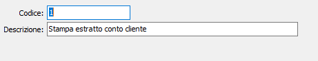
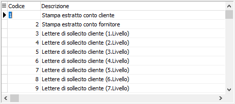

La tabella dei tipi stampe consente di definire le tipologie di stampa utilizzate dal programma.
 Finestra di input in formato dettaglio |
 Finestra di input in formato tabella |
CODICE: campo numerico per inserire il codice del tipo stampa in esame. Sul campo sono attive le funzioni di ricerca sulla tabella stessa.
DESCRIZIONE: campo alfanumerico di 50 caratteri per descrivere il tipo di stampa in esame.